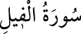

<a name=10866></a><br/>
<b>105- el-FÎL SÛRESİ</b><br/>
<i><b>Kâbe’yi yıkmak isteyen Ebrehe’nin fillerle hücumundan bahsettiği için bu ismi</b></i><br/>
<i><b>almıştır. Kâfirûn sûresinden sonra Mekke’de inmiştir, 5 âyettir.</b></i><br/>
